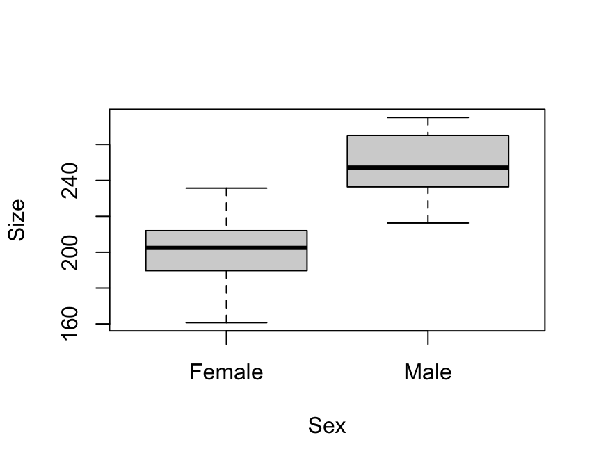
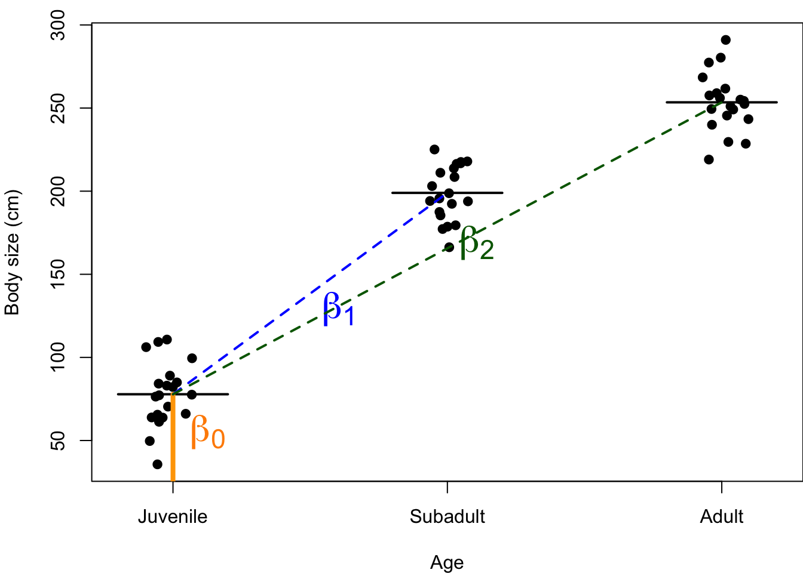
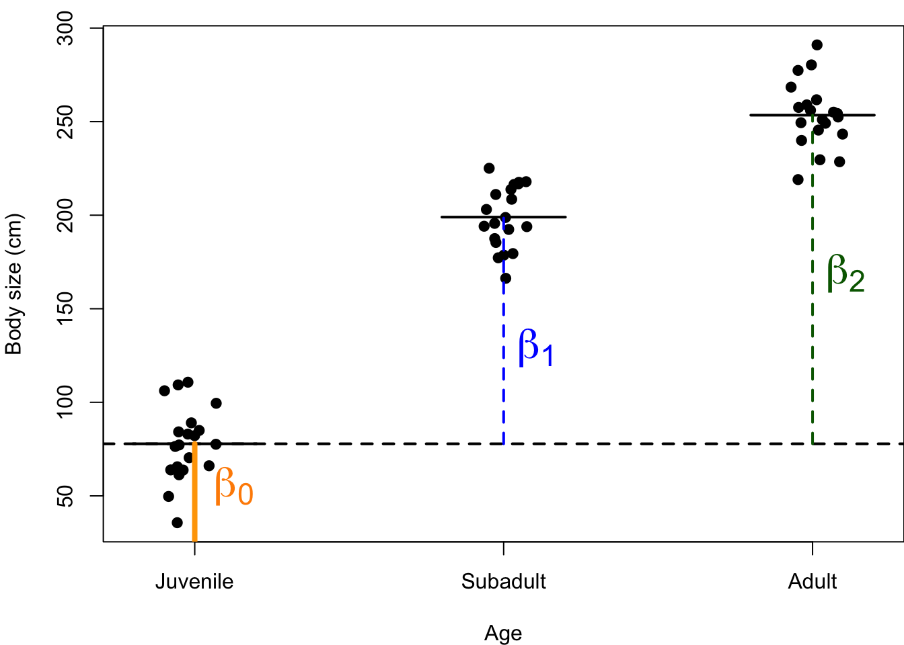
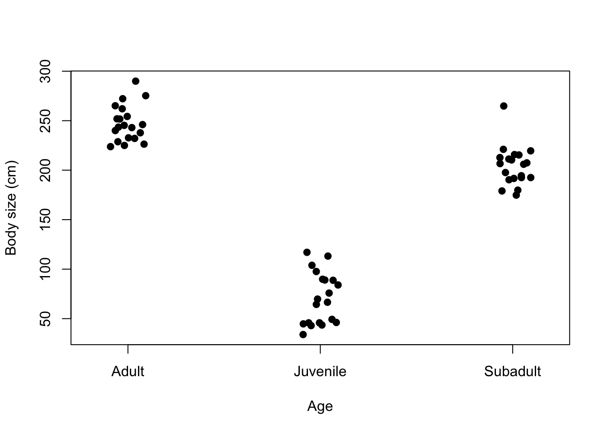
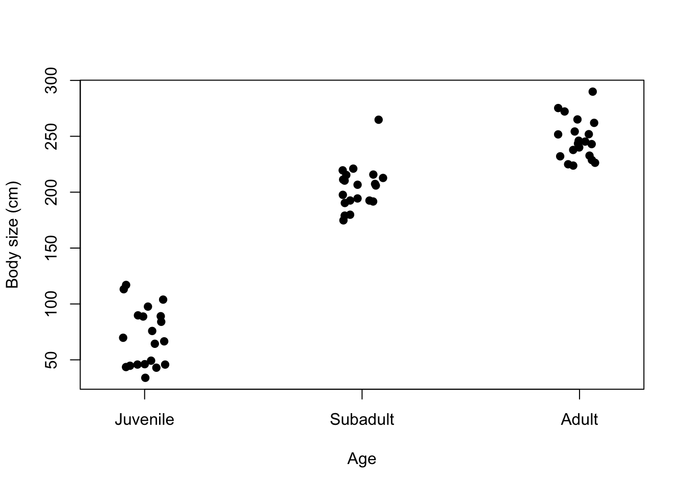

Last class we discussed how to analyze data when we have a categorical X-variable data.
Traditionally, this is called a t-test – but I am going to avoid calling it that going forward. Instead, we are always going to be using the linear model in this class, which is more parsimonious (simple) and will create continuity with the approach we are going to take toward understanding statistics in this class
Today we will discuss how to present results from analysis of categorical data. We have a ‘canned’ sentence for presenting results when we have two continuous variables, but we need a slightly different approach for when we have categorical X-data.
The good news is that our X-variable data can only be continuous or categorical. So once we learn this second approach, we will only have to know these two approaches. We can use them repeatedly during our various analytical activities, perhaps with slight modifications.
With continuous X data, we start out by saying: “For each 1 unit increase in X, we observed a unit change in Y.” There is no such thing as a unit change in X when we have a categorical X variable, so we will drop that. Instead, we will say something like:
**“We found that [group 1] was [\(\beta_1\)] [Y-units] ([+/-CI]; 95% CI) [descriptor word to indicate direction] than [group 2] (p = [p-value]).”
Let’s take a peak in R at the elephant seal body size data from last class. We will analyze it using ‘lm()’ with a categorical X-variable:
# Load the data
datum <- read.csv("lecture_8_seal_data.csv")
# Examine it
head(datum)## X Sex Size Male
## 1 1 Female 188.7905 0
## 2 2 Female 195.3965 0
## 3 3 Female 231.1742 0
## 4 4 Female 201.4102 0
## 5 5 Female 202.5858 0
## 6 6 Female 234.3013 0tail(datum)## X Sex Size Male
## 35 35 Male 266.4316 1
## 36 36 Male 263.7728 1
## 37 37 Male 261.0784 1
## 38 38 Male 248.7618 1
## 39 39 Male 243.8807 1
## 40 40 Male 242.3906 1# Examine structure of data
str(datum)## 'data.frame': 40 obs. of 4 variables:
## $ X : int 1 2 3 4 5 6 7 8 9 10 ...
## $ Sex : chr "Female" "Female" "Female" "Female" ...
## $ Size: num 189 195 231 201 203 ...
## $ Male: int 0 0 0 0 0 0 0 0 0 0 ...# Force 'Sex' to be a factor
datum$Sex <- factor(datum$Sex)
# Scatterplot
plot(Size ~ Sex, data = datum)
# Fit a linear model
results <- lm(Size ~ Sex, data = datum)
summary(results)##
## Call:
## lm(formula = Size ~ Sex, data = datum)
##
## Residuals:
## Min 1Q Median 3Q Max
## -42.165 -12.604 -0.433 12.777 32.906
##
## Coefficients:
## Estimate Std. Error t value Pr(>|t|)
## (Intercept) 202.832 4.043 50.164 < 2e-16 ***
## SexMale 46.142 5.718 8.069 9.24e-10 ***
## ---
## Signif. codes: 0 '***' 0.001 '**' 0.01 '*' 0.05 '.' 0.1 ' ' 1
##
## Residual standard error: 18.08 on 38 degrees of freedom
## Multiple R-squared: 0.6315, Adjusted R-squared: 0.6218
## F-statistic: 65.12 on 1 and 38 DF, p-value: 9.239e-10Let’s talk about this a bit to make sure we are all on the same page.
The analysis output from linear regression with categorical X-data is the same output that we got when we ran linear regression using two continuous variables.
We can now use this output to populate the our ‘presenting resultings’ sentence. We will need the +/- 95% CI:
# Confidence intervals
confint(results)## 2.5 % 97.5 %
## (Intercept) 194.64712 211.01783
## SexMale 34.56654 57.71822# Calculate confidence intervals
57.7 - 46.1## [1] 11.6# simple way: upper limit minus mean
confint(results)["SexMale", 2] - results$coefficients["SexMale"]## SexMale
## 11.57584# extracting estimates from objects to do math“We found that males were 46.1 kg (+/-11.6; +/-95% CI) heavier than females (p = 9.24e-10).”
You could also be more descriptive and perhaps say: “had 46.1 kg (…) greater mass than females”. It’s nice to be descriptive – but also good to keep things concise.
What if you wanted to put females first? That’s fine – just swap things around, word smith it a bit, and put females first: “We found that females had 46.1 kg (…) less mass than males”.
If you give R categorical data, R will automatically create the ‘reference’ group using the alphabetical order of the groups. For example, if you gave R data with two experimental treatments in the X-variable, “control” and “burned”, it will automatically make “burned” the reference group – but you might want to change that to visualize the ‘effect’ of burn treatment compared to control, untreated areas.
Takehome message: Running a t-test is the same as running a regression, but with a categorical X-variable – but it doesn’t matter with coding in R. The only difference is you have to understand that you have a categorical X-variable, and write a slightly different sentence.
We can change what the reference group is in R using the ‘factor()’ function. For example, using our seal data:
# Examine the categorical data
str(datum$Sex)## Factor w/ 2 levels "Female","Male": 1 1 1 1 1 1 1 1 1 1 ...# The 'levels' are the groups in the variable, and they are ordered alphabetically by default.
# Re-order the levels
datum$Sex <- factor(datum$Sex, levels = c("Male", "Female")) # switch the order
# Re-run model
results2 <- lm(Size ~ Sex, data = datum)
summary(results2)##
## Call:
## lm(formula = Size ~ Sex, data = datum)
##
## Residuals:
## Min 1Q Median 3Q Max
## -42.165 -12.604 -0.433 12.777 32.906
##
## Coefficients:
## Estimate Std. Error t value Pr(>|t|)
## (Intercept) 248.975 4.043 61.576 < 2e-16 ***
## SexFemale -46.142 5.718 -8.069 9.24e-10 ***
## ---
## Signif. codes: 0 '***' 0.001 '**' 0.01 '*' 0.05 '.' 0.1 ' ' 1
##
## Residual standard error: 18.08 on 38 degrees of freedom
## Multiple R-squared: 0.6315, Adjusted R-squared: 0.6218
## F-statistic: 65.12 on 1 and 38 DF, p-value: 9.239e-10Now ‘SexFemale’ is the \(\beta_1\) effect.
Let’s extend this model a little bit. Previously we had considered a situation where we had a ‘binomial’ X-variable (bi- and nomial = two names = a categorical variable with two categories). Let’s now consider a situation where we have a multinomial (multi- = more than two) X-variable with more than two categories within it.
Continuous Y; Multinomial X
The first thing I want to show you is how this works in the general linear modeling framework. Up to this point, we have used our trusty equation for the linear model as:
\(Y = \beta_0 + \beta_1 X_1 + \epsilon \sim N(0, \sigma)\)
We previously introduced the concept of ‘dummy coding’, which will be particularly useful for us to explain how to extend our simple linear model to accommodate multiple groups.
We will take our categorical X-variable and ‘dummy code’ it by creating a column for each category that describes whether each observation in our data is within that category (1) or not (0). For example:
## Age Juvenile Subadult Adult
## 1 Juvenile 1 0 0
## 2 Juvenile 1 0 0
## 3 Juvenile 1 0 0
## 4 Subadult 0 1 0
## 5 Subadult 0 1 0
## 6 Subadult 0 1 0
## 7 Adult 0 0 1
## 8 Adult 0 0 1
## 9 Adult 0 0 1When we create our general linear model to accommodate these multiple groups, we now need to have an X for every one of these dummy-coded columns. But, we are going to leave one out.
\(Y = \beta_0 + \beta_1 Subadult + \beta_2 Adult + \epsilon \sim N(0, \sigma)\)
You might be scratching your head why ‘Juvenile’ wasn’t included. We don’t need to include it because it will be automatically be captured by the \(\beta_0\) intercept!
The reference group is the group by which all others are compared.
Another way to look at this is to examine our dummy-coded columns. If we look at the ‘Subadult’ and ‘Adult’ columns, we actually don’t need the ‘Juvenile’ column to know which observations are of juveniles:
## Age Subadult Adult
## 1 Juvenile 0 0
## 2 Juvenile 0 0
## 3 Juvenile 0 0
## 4 Subadult 1 0
## 5 Subadult 1 0
## 6 Subadult 1 0
## 7 Adult 0 1
## 8 Adult 0 1
## 9 Adult 0 1The individuals that were 0 for both Subadults and Adults must be Juveniles, by the process of elimination.
Let’s see how this works mathematically:
\(Y = \beta_0 + \beta_1 Subadult + \beta_2 Adult + \epsilon\)
\(Y(juv) = \beta_0 + \cancel{\beta_1 * 0} + \cancel{\beta_2 * 0} + \epsilon\)
\(Y(juv) = \beta_0 + \epsilon\)
The meaning of \(\beta_0\) has not changed – the average Y (size) of our reference group.
\(Y(sub) = \beta_0 + \beta_1 * 1 + \cancel{\beta_2 * 0} + \epsilon\)
\(Y(sub) = \beta_0 + \beta_1 + \epsilon\)
The meaning of \(\beta_1\) has not changed either – the difference between juveniles and subadults.
\(Y(adult) = \beta_0 + \cancel{\beta_1 * 0} + \beta_2 * 1 + \epsilon\)
\(Y(adult) = \beta_0 + \beta_2 + \epsilon\)
Our new variable, \(\beta_2\), has a similar meaning to \(\beta_1\) – the difference between adults and juveniles.
I like to visualize these things graphically. So I am going to draw something that might help us visualize this on the board:

Note: our error is normally distributed with a mean = 0, centered on the average, with a standard deviation of \(\sigma\).
Or:

Q: Does anyone have any questions?
You might be wondering… how would we estimate the difference between subadults and adults?
Q: Anybody know how we might learn about the difference between juveniles and adults? Changing the reference.
Let’s see what this would look like in R. Download some simulated data here.
### Code to test for differences among three groups
# Read in the data
datum <- read.csv("lecture_9_ages.csv")
# Examine the data
head(datum)## X Age Size
## 1 1 Juvenile 103.89102
## 2 2 Juvenile 84.03008
## 3 3 Juvenile 75.82466
## 4 4 Juvenile 66.55006
## 5 5 Juvenile 33.93506
## 6 6 Juvenile 97.62674# Plot
stripchart(Size ~ Age, data = datum, vertical = TRUE, method = "jitter",
pch = 19, xlab = "Age", ylab = "Body size (cm)")
# Re-order categorical X-data
datum$Age <- factor(datum$Age, levels = c("Juvenile", "Subadult", "Adult"))
# Plot
stripchart(Size ~ Age, data = datum, vertical = TRUE, method = "jitter",
pch = 19, xlab = "Age", ylab = "Body size (cm)")
# Add in dummy-coding
dummy <- model.matrix(~ Age -1, data = datum)
colnames(dummy) <- c("Juvenile", "Subadult", "Adult") # rename columns
# be careful; make sure name order reflects order of categorical variable 'Age'
datum <- cbind(datum, dummy) # bind to dataframe
# Re-examine data
head(datum)## X Age Size Juvenile Subadult Adult
## 1 1 Juvenile 103.89102 1 0 0
## 2 2 Juvenile 84.03008 1 0 0
## 3 3 Juvenile 75.82466 1 0 0
## 4 4 Juvenile 66.55006 1 0 0
## 5 5 Juvenile 33.93506 1 0 0
## 6 6 Juvenile 97.62674 1 0 0‘Truth’ for these data are:
Let’s use ‘lm()’ to test for these differences in R:
## Analysis of variance; 'aov()'
help(aov)
# Fit an analysis of variance... by calling 'lm()'!!
# Run an ANOVA
results <- aov(Size ~ Age, data = datum)
summary(results)## Df Sum Sq Mean Sq F value Pr(>F)
## Age 2 339600 169800 362.5 <2e-16 ***
## Residuals 57 26697 468
## ---
## Signif. codes: 0 '***' 0.001 '**' 0.01 '*' 0.05 '.' 0.1 ' ' 1What does it give us…? An ANOVA table!
Q: What’s missing here..? Estimates of effects – and whether those individual effects are significant or not. So, this is not very useful.
## Multiple comparison using 'lm()'
# Run analysis
results2 <- lm(Size ~ Age, data = datum)
summary(results2)##
## Call:
## lm(formula = Size ~ Age, data = datum)
##
## Residuals:
## Min 1Q Median 3Q Max
## -36.662 -16.076 -1.663 13.746 60.643
##
## Coefficients:
## Estimate Std. Error t value Pr(>|t|)
## (Intercept) 70.597 4.839 14.59 <2e-16 ***
## AgeSubadult 133.581 6.844 19.52 <2e-16 ***
## AgeAdult 176.732 6.844 25.82 <2e-16 ***
## ---
## Signif. codes: 0 '***' 0.001 '**' 0.01 '*' 0.05 '.' 0.1 ' ' 1
##
## Residual standard error: 21.64 on 57 degrees of freedom
## Multiple R-squared: 0.9271, Adjusted R-squared: 0.9246
## F-statistic: 362.5 on 2 and 57 DF, p-value: < 2.2e-16Here are the results, and by now hopefully this is starting to look familiar!
Q: What is the reference group? How do we know?
Notice: these estimates are pretty good estimates of truth! Which is what statistics should do. It’s not perfect because there’s randomness in our data (process error, sampling error, etc.).
And then all of our usual metrics at the bottom.
Let’s review the difference between ANOVA and t-test. We just did an ANOVA, but we could have done a bunch of t-tests. Why not just do a bunch of t-tests to do all of these individual comparisons? Why might I not want to do that?
Q: Can anyone remember why we might not want to a bunch of t-tests? Inflating our risk of committing Type I error!
Remember: Type I error is when we reject the null when in fact it is True; what we most want to avoid. We want to keep our risk of committing Type I error to be no greater than 0.05.
If we did 3 t-tests:
# Probability of committing no errors in three t-tests
(1 - 0.05)^3## [1] 0.857375# Probability of committing >=1 Type I errors in three t-tests
1 - (1 - 0.05)^3## [1] 0.142625This is why they teach us to use analyses like ANOVA in statistics. It is meant to be one single test that can evaluate multiple comparisons and thus minimizes our risk of committing Type I error.
Concept: first, run ANOVA, and get a single p-value. That p-value tells you whether at least two groups are different from another group; but it does not mean that all groups are different.
ANOVA w/ p < 0.05 – at least 2 groups are different
After getting the significant p-value, you then do a ‘post-hoc’ test to evaluate those differences. (We’ll talk about this in a few days.)
The important part is that our ‘lm()’ summary output gives us the single ANOVA p-value, which is at the bottom of the summary.
Another way to get this is to use:
# ANOVA test
anova(results2)## Analysis of Variance Table
##
## Response: Size
## Df Sum Sq Mean Sq F value Pr(>F)
## Age 2 339600 169800 362.54 < 2.2e-16 ***
## Residuals 57 26697 468
## ---
## Signif. codes: 0 '***' 0.001 '**' 0.01 '*' 0.05 '.' 0.1 ' ' 1So now we know that there is at least two groups are differnet than eachother.
To know which ones, we can use a ‘post-hoc test’… or we can just look up to the results of the linear model! The p-values with our effects tell us that:
And now we also have estimates! The effect sizes for each of the \(\beta\) values. We get all of this information from a single annalysis and a single model output.
How do we report the results?
summary(results2)##
## Call:
## lm(formula = Size ~ Age, data = datum)
##
## Residuals:
## Min 1Q Median 3Q Max
## -36.662 -16.076 -1.663 13.746 60.643
##
## Coefficients:
## Estimate Std. Error t value Pr(>|t|)
## (Intercept) 70.597 4.839 14.59 <2e-16 ***
## AgeSubadult 133.581 6.844 19.52 <2e-16 ***
## AgeAdult 176.732 6.844 25.82 <2e-16 ***
## ---
## Signif. codes: 0 '***' 0.001 '**' 0.01 '*' 0.05 '.' 0.1 ' ' 1
##
## Residual standard error: 21.64 on 57 degrees of freedom
## Multiple R-squared: 0.9271, Adjusted R-squared: 0.9246
## F-statistic: 362.5 on 2 and 57 DF, p-value: < 2.2e-16confint(results2)## 2.5 % 97.5 %
## (Intercept) 60.90658 80.28737
## AgeSubadult 119.87685 147.28543
## AgeAdult 163.02758 190.43616“We found that subadults were 133.6 kg (+/-13.7; +/-95% CI) heavier than juveniles (p < 2e-16).”
“We found that adults were 176.7 kg (+/-13.7; +/-95% CI) heavier than juveniles (p < 2e-16).”
But, there are three groups, so we will need to write three sentences to report all of those comparisons. To do this, we have to recreate our results object. It’s pretty easy!
We will use the ‘relevel()’ function
# Re-run analysis with different reference
results3 <- lm(Size ~ relevel(Age, ref = "Subadult"), data = datum)
summary(results3)##
## Call:
## lm(formula = Size ~ relevel(Age, ref = "Subadult"), data = datum)
##
## Residuals:
## Min 1Q Median 3Q Max
## -36.662 -16.076 -1.663 13.746 60.643
##
## Coefficients:
## Estimate Std. Error t value Pr(>|t|)
## (Intercept) 204.178 4.839 42.192 < 2e-16 ***
## relevel(Age, ref = "Subadult")Juvenile -133.581 6.844 -19.519 < 2e-16 ***
## relevel(Age, ref = "Subadult")Adult 43.151 6.844 6.305 4.53e-08 ***
## ---
## Signif. codes: 0 '***' 0.001 '**' 0.01 '*' 0.05 '.' 0.1 ' ' 1
##
## Residual standard error: 21.64 on 57 degrees of freedom
## Multiple R-squared: 0.9271, Adjusted R-squared: 0.9246
## F-statistic: 362.5 on 2 and 57 DF, p-value: < 2.2e-16This new summary looks a little uglier… but it gives us the information that we needed.
“We found that adults were 43.2 kg (+/-13.7; +/-95% CI) heavier than subadults (p = 4.53e-08).”
Note: the juvenile-subadult estimate remained the same, but became negative.
Questions?
I am going to encourage us to build models that can evaluate global difference and within-group differences within one single model, such as we have done using ‘lm()’, for two reasons.
Dummy coded variables can be pretty useful!
Turns out we can really easily fit these models using the ‘dummy-coded’ variables. Here’s how that works.
# Using the dummy-coded variables to run this analysis
results4 <- lm(Size ~ Subadult + Adult, data = datum)
summary(results4)##
## Call:
## lm(formula = Size ~ Subadult + Adult, data = datum)
##
## Residuals:
## Min 1Q Median 3Q Max
## -36.662 -16.076 -1.663 13.746 60.643
##
## Coefficients:
## Estimate Std. Error t value Pr(>|t|)
## (Intercept) 70.597 4.839 14.59 <2e-16 ***
## Subadult 133.581 6.844 19.52 <2e-16 ***
## Adult 176.732 6.844 25.82 <2e-16 ***
## ---
## Signif. codes: 0 '***' 0.001 '**' 0.01 '*' 0.05 '.' 0.1 ' ' 1
##
## Residual standard error: 21.64 on 57 degrees of freedom
## Multiple R-squared: 0.9271, Adjusted R-squared: 0.9246
## F-statistic: 362.5 on 2 and 57 DF, p-value: < 2.2e-16# Changing the reference
results5 <- lm(Size ~ Juvenile + Adult, data = datum)
summary(results5)##
## Call:
## lm(formula = Size ~ Juvenile + Adult, data = datum)
##
## Residuals:
## Min 1Q Median 3Q Max
## -36.662 -16.076 -1.663 13.746 60.643
##
## Coefficients:
## Estimate Std. Error t value Pr(>|t|)
## (Intercept) 204.178 4.839 42.192 < 2e-16 ***
## Juvenile -133.581 6.844 -19.519 < 2e-16 ***
## Adult 43.151 6.844 6.305 4.53e-08 ***
## ---
## Signif. codes: 0 '***' 0.001 '**' 0.01 '*' 0.05 '.' 0.1 ' ' 1
##
## Residual standard error: 21.64 on 57 degrees of freedom
## Multiple R-squared: 0.9271, Adjusted R-squared: 0.9246
## F-statistic: 362.5 on 2 and 57 DF, p-value: < 2.2e-16We purposefully left-out ‘Juvenile’, and it is forced to the reference.
These results are the same as when we fit the model using the ‘Age’ categorical variable.
I like these results better because the effect description is really accurate: “Effect of being subadult” is more intuitive than the “Effect of being”AgeSubadult”, in my opinion.
What if we specified all three of the dummy-coded variables, would that screw it up?
# Using the dummy-coded variables to run this analysis
results6 <- lm(Size ~ Subadult + Adult + Juvenile, data = datum)
summary(results6)##
## Call:
## lm(formula = Size ~ Subadult + Adult + Juvenile, data = datum)
##
## Residuals:
## Min 1Q Median 3Q Max
## -36.662 -16.076 -1.663 13.746 60.643
##
## Coefficients: (1 not defined because of singularities)
## Estimate Std. Error t value Pr(>|t|)
## (Intercept) 70.597 4.839 14.59 <2e-16 ***
## Subadult 133.581 6.844 19.52 <2e-16 ***
## Adult 176.732 6.844 25.82 <2e-16 ***
## Juvenile NA NA NA NA
## ---
## Signif. codes: 0 '***' 0.001 '**' 0.01 '*' 0.05 '.' 0.1 ' ' 1
##
## Residual standard error: 21.64 on 57 degrees of freedom
## Multiple R-squared: 0.9271, Adjusted R-squared: 0.9246
## F-statistic: 362.5 on 2 and 57 DF, p-value: < 2.2e-16Juvenile was forced to be “NA”, and instead Juvenile was forced to be reference because – it was the last one included.
Let’s try a little critical thinking exercise. Consider this model:
# Using the dummy-coded variables to run this analysis
results7 <- lm(Size ~ Adult, data = datum)
summary(results7)##
## Call:
## lm(formula = Size ~ Adult, data = datum)
##
## Residuals:
## Min 1Q Median 3Q Max
## -103.452 -47.779 -2.938 54.487 127.433
##
## Coefficients:
## Estimate Std. Error t value Pr(>|t|)
## (Intercept) 137.388 9.403 14.61 < 2e-16 ***
## Adult 109.941 16.287 6.75 7.69e-09 ***
## ---
## Signif. codes: 0 '***' 0.001 '**' 0.01 '*' 0.05 '.' 0.1 ' ' 1
##
## Residual standard error: 59.47 on 58 degrees of freedom
## Multiple R-squared: 0.44, Adjusted R-squared: 0.4303
## F-statistic: 45.57 on 1 and 58 DF, p-value: 7.689e-09Q: What does this model do…?
It compares the size of adults compared to the size of all other observations combined into a single group. Juveniles and subadults are lumped.
“We found that adults were 109.9 kg (…) heavier than juveniles and subadults combined as a group (p = 7.69e-09).”
Here’s another way to do it:
# Using the dummy-coded variables to run this analysis
results8 <- lm(Size ~ I(Juvenile + Subadult), data = datum)
# I() is a function to do whatever is inside the parentheses
summary(results8)##
## Call:
## lm(formula = Size ~ I(Juvenile + Subadult), data = datum)
##
## Residuals:
## Min 1Q Median 3Q Max
## -103.452 -47.779 -2.938 54.487 127.433
##
## Coefficients:
## Estimate Std. Error t value Pr(>|t|)
## (Intercept) 247.33 13.30 18.60 < 2e-16 ***
## I(Juvenile + Subadult) -109.94 16.29 -6.75 7.69e-09 ***
## ---
## Signif. codes: 0 '***' 0.001 '**' 0.01 '*' 0.05 '.' 0.1 ' ' 1
##
## Residual standard error: 59.47 on 58 degrees of freedom
## Multiple R-squared: 0.44, Adjusted R-squared: 0.4303
## F-statistic: 45.57 on 1 and 58 DF, p-value: 7.689e-09These are advantages of using ‘dummy-coded’ variables! It gives us flexibility.
Questions?
It doesn’t matter how many groups your categorical variable has. It’s still ‘lm(Y ~ X)’.
It will create a number of effects (\(\beta\)). The number of \(\beta\)s will be the number of groups, \(n\), minus 1 (the reference).
We have a different results sentence now, that we will use for any categorical variables.
For categorical variables, you will need a sentence for all pairwise comparisons.
Code to simulate the three-age data and save it. Just here in case you are interested in how it was made.
### Code for simulating data to be analyzed body size data for two sexes
# Simulate the binomial X-variable (sex)
n <- 60
x <- c(rep("Juvenile", n/3), rep("Subadult", n/3), rep("Adult", n/3))
x <- factor(x, levels = c("Juvenile", "Subadult", "Adult"))
# Simulate continuous y-variable data
y <- ifelse(x == "Juvenile", rnorm(n/3, mean = 75, sd = 20), #juveniles
ifelse(x == "Subadult", rnorm(n/3, mean = 200, sd = 20), #subad
rnorm(n/2, mean = 250, sd = 20))) #adults
# Create dataframe
datum <- data.frame(Age = x, Size = y)
# Save these data for future use
write.csv(datum, "lecture_9_ages.csv")